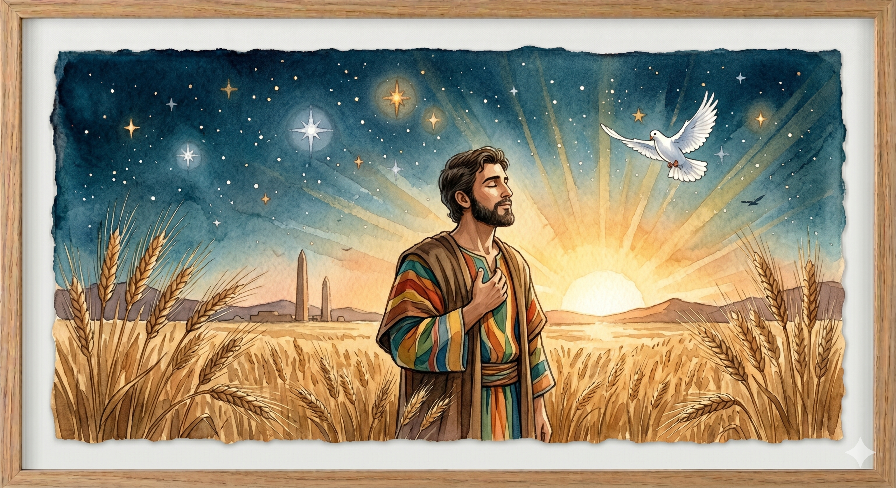
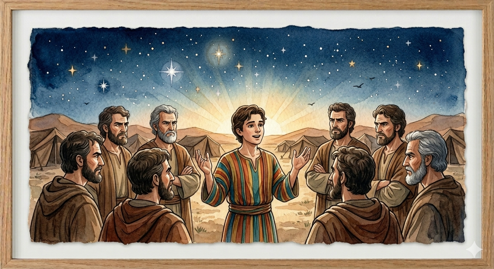
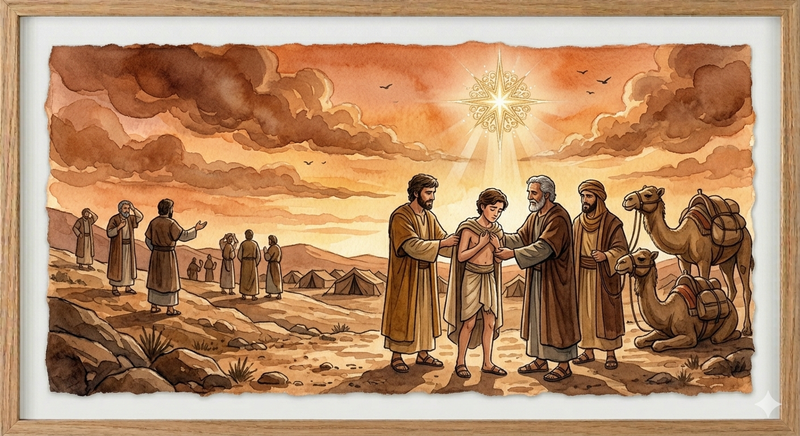
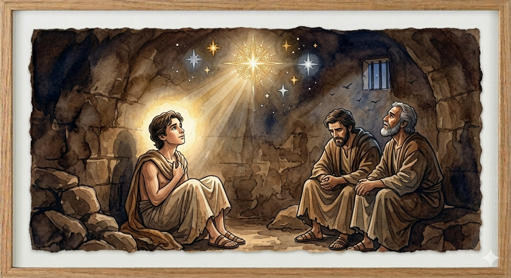
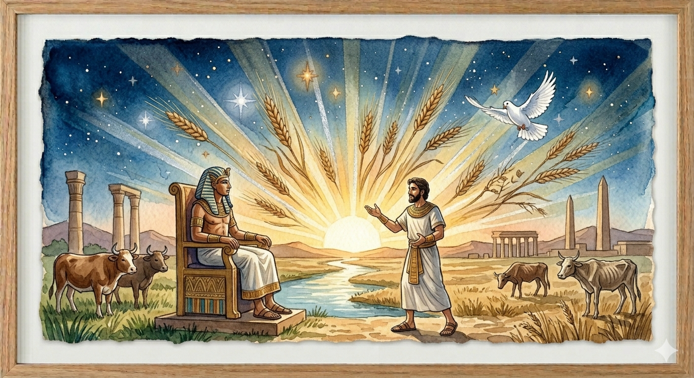
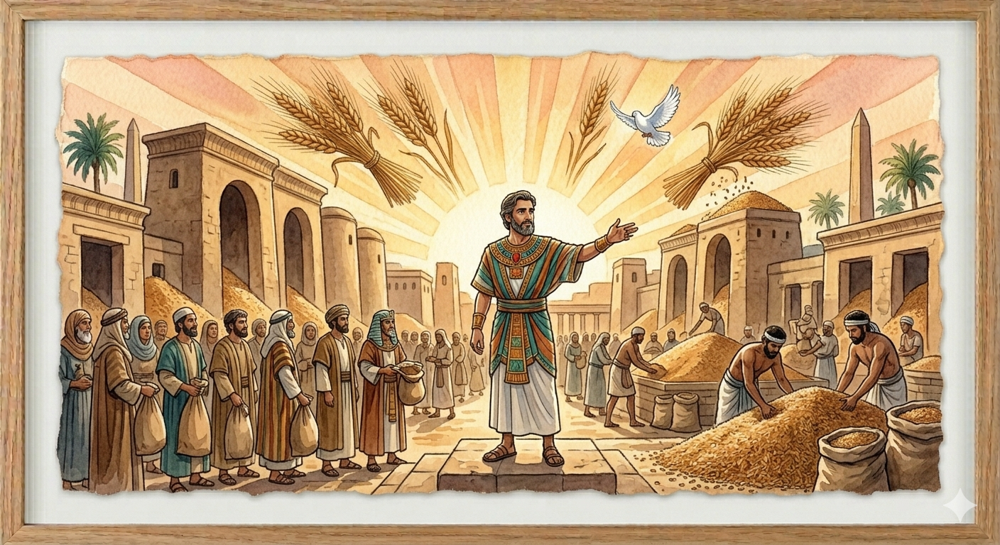
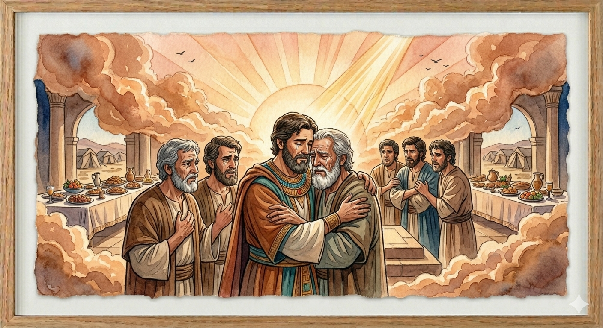
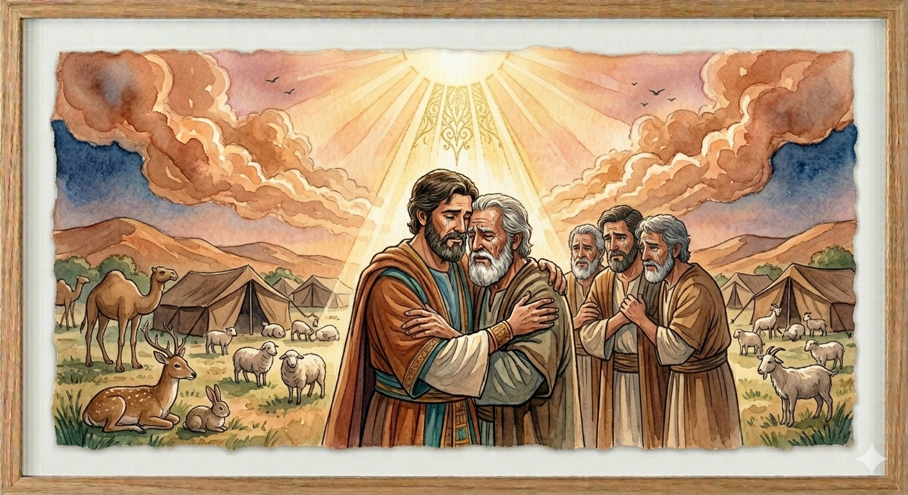
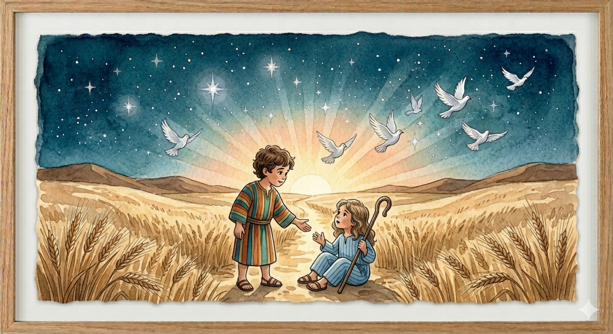
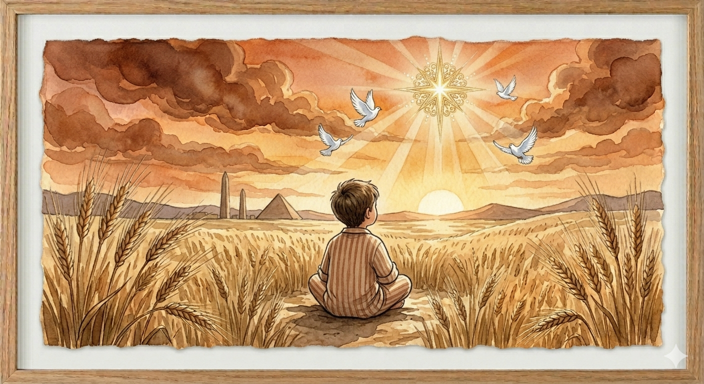

José era o filho amado de Jacó, e seu pai lhe deu uma túnica colorida, símbolo de carinho especial. Ainda jovem, José teve sonhos enviados por Deus: feixes de trigo que se curvavam ao seu, e o sol, a lua e onze estrelas que se inclinavam diante dele. Seus irmãos, cheios de inveja, não suportavam ouvir aquilo. Um dia, quando José os visitou no campo, eles o agarraram, arrancaram sua túnica e o venderam a mercadores que iam para o Egito. O coração de José se partiu, mas Deus estava com ele, mesmo naquela cova e naquela caravana rumo ao desconhecido.


Deus está comigo
em todos os momentos
José foi parar num poço e depois numa prisão, mas Deus estava sempre por perto. Você já passou por um momento difícil em que sentiu a presença de Deus?
Desenhe a túnica de José: use cores lindas! Escreva nela: “Deus está comigo sempre”.
Querido Deus, obrigado porque, assim como cuidaste de José na prisão, Tu cuidas de mim.
Mesmo quando as coisas são difíceis, eu sei que o Senhor está ao meu lado.
Hoje eu confio que o Senhor transforma em bênção.

No Egito, José foi comprado por Potifar, oficial de Faraó, e prosperou porque o Senhor era com ele. Mas, injustamente acusado, foi parar na prisão. Lá dentro, nem mesmo as grades apagaram seu dom: interpretou os sonhos do copeiro e do padeiro do rei. Dois anos depois, quando Faraó teve sonhos que ninguém explicava, o copeiro se lembrou de José. Ele foi trazido da masmorra ao trono e revelou que sete anos de fartura seriam seguidos por sete de fome. Faraó reconheceu a sabedoria divina em José e o colocou como governador de todo o Egito. Deus transformou o prisioneiro em príncipe.


Deus me levanta
no momento certo
Deus tirou José da prisão e o tornou governador. Você já viu Deus mudar uma situação difícil em algo bom? Peça para o papai ou mamãe contar uma história assim!
Desenhe uma escada que vai de um lugar escuro (prisão) até um lugar muito bonito (palácio). No alto, escreva: “Deus me levantou!”.
Senhor, obrigado porque o Senhor vê meu coração e sabe o melhor para mim.
Ajuda-me a esperar com paciência e a confiar que Tu me exaltas no tempo certo.
Obrigado porque a minha está em Tuas mãos.

A fome que assolou o mundo trouxe os irmãos de José ao Egito para comprar mantimentos. Eles não o reconheceram, mas José os reconheceu. Depois de testá-los e ver que estavam arrependidos, José revelou sua identidade chorando copiosamente: “Eu sou José, vosso irmão! Não vos entristeçais; Deus me enviou adiante de vós para conservar-vos a vida”. Perdoou-os de todo coração, mandou buscar o pai Jacó e estabeleceu toda a família em Gósen, a melhor terra do Egito. José declarou a grande lição: “Vós bem intentastes mal contra mim, porém Deus o tornou em bem”. O Senhor escreveu certo por linhas tortas.


Deus transforma
tudo para o bem!
José perdoou seus irmãos mesmo depois de tudo o que eles fizeram. Tem alguém que você precisa perdoar hoje? Peça ajuda de Deus!
Desenhe um coração e, dentro dele, escreva o nome de alguém que você quer amar com o perdão de Deus. Ore por essa pessoa.
Senhor, obrigado porque Tu transformaste o mal que fizeram a José em bem.
Ajuda-me a perdoar como José perdoou e a confiar no Teu plano.
Obrigado porque até as coisas tristes podem virar em Tuas mãos.